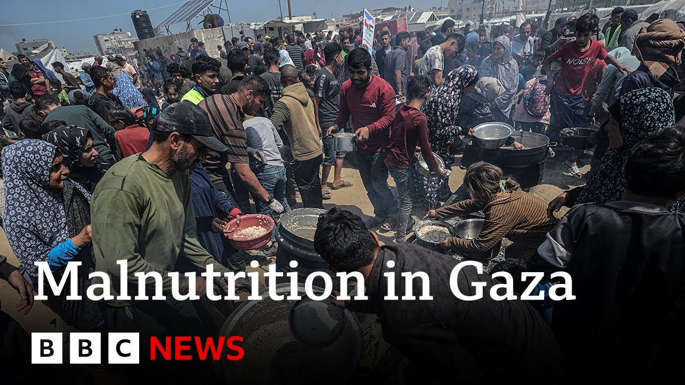

来B站一起耍【Global每日英语简报】
【加沙营养不良问题加剧，以色列封锁进入第三个月 | BBC新闻】
Summary: The blockade in Gaza has led to severe malnutrition, especially among vulnerable children, with shortages of food, milk, and medical supplies. The UN condemns Israel's restrictions as collective punishment, while aid distribution faces challenges due to alleged theft and supply shortages. Anger grows against Hamas as civilians suffer, and Israel denies a humanitarian crisis despite visible starvation.
摘要： 加沙的封锁导致严重营养不良，弱势儿童尤其受影响，食物、奶粉和医疗用品短缺。联合国谴责以色列的限制是集体惩罚，而援助分发因盗窃指控和物资短缺面临挑战。民众对哈马斯的不满加剧，以色列否认存在人道主义危机，尽管饥饿现象明显。

⏱️ Estimated Reading Time: 6 min
[Music] Sometimes in this war, it is the smallest sound that makes the loudest [Applause] statement.
[音乐] 在这场战争中，有时最微小的声音却能发出最响亮的[掌声]宣言。
Siwar Ashure is 5 months old and struggles to absorb nutrition.
西瓦尔·阿舒尔只有5个月大，难以吸收营养。
Because of the blockade, the special milk formula she needs to survive is running out.
由于封锁，她生存所需的特殊配方奶粉即将耗尽。
When I change her, her body is very bad and dehydrated.
当我给她换尿布时，她的身体非常糟糕且脱水。
She's like a skeleton.
她瘦得只剩皮包骨。
Whenever I look at her, I cry.
每次看着她，我都会哭。
I cannot bear how thin she is.
我无法忍受她如此瘦弱。
Si two months ago.
两个月前。
Children like her who are already vulnerable are in the greatest immediate danger from food shortages.
像她这样本就脆弱的孩子因食物短缺面临最紧迫的危险。
She has been suffering for a while.
她已经痛苦了一段时间。
She had chronic diarrhea and she needed a specific type of milk.
她患有慢性腹泻，需要一种特定的奶粉。
And most of the times this milk is unavailable.
大多数时候这种奶粉都买不到。
Nothing enters through the borders.
没有任何物资通过边境进入。
No milk, food or anything.
没有奶粉、食物或其他任何东西。
This leads to big problems here for the kids.
这给这里的孩子们带来了严重问题。
The UN calls Israel's blockade cruel collective punishment.
联合国称以色列的封锁是残酷的集体惩罚。
Community kitchens helping hundreds of thousands have been forced to close.
为数十万人提供帮助的社区厨房被迫关闭。
This one in Canunas is running out of supplies.
卡努纳斯的这家厨房物资即将耗尽。
The other kitchens have already stopped operating due to a lack of supplies, says founder Muhammad Rela.
创始人穆罕默德·雷拉表示，其他厨房因物资短缺已停止运营。
The main kitchen will run out of food in two or three days.
主厨房的食物将在两三天内耗尽。
Many of those that support us had their warehouses looted.
许多支持我们的仓库遭到抢劫。
Crowds breaking into a UN warehouse as desperation takes hold.
绝望之下，人群闯入联合国仓库。
Israel and the main Palestinian leadership say Hamas steals aid.
以色列和巴勒斯坦主要领导层称哈马斯窃取援助物资。
Hamas denies this, blaming criminal gangs, vowing to stop them.
哈马斯否认这一指控，归咎于犯罪团伙，并誓言制止他们。
They shouldn't blame the people.
他们不该责怪民众。
There is no flour, no food, and the children need to eat.
没有面粉，没有食物，而孩子们需要吃饭。
Unfortunately, there was no food in Als.
遗憾的是，阿尔斯没有食物。
The people found only ropes, so they left.
人们只找到了绳子，于是离开了。
The UN says it has enough food waiting outside Gaza to feed a million people for 4 months.
联合国表示，加沙境外有足够养活100万人4个月的食物。
But a senior colleague of Mr. Netanyahu told me there was no aid crisis.
但内塔尼亚胡的一位高级同事告诉我，不存在援助危机。
Right now, there is food in Gaza.
目前加沙有食物。
There is fuel.
有燃料。
There is all what is needed.
所需物资一应俱全。
Now, Israel wouldn't do such a restriction if population didn't have food.
如果民众没有食物，以色列不会实施这样的限制。
I mean, I know my country perfectly well.
我非常了解我的国家。
You're you're denying the evidence of people's eyes.
你们在否认人们亲眼所见的事实。
Starving children.
饥饿的孩子们。
They're not starving children.
他们没有挨饿。
No, I repeat again.
不，我再次重申。
Never ever was such amount quantities of humanitarian aid brought inside.
从未有如此大量的人道主义援助进入。
And what we want is our hostages back and kamas out of Gaza.
我们只想要人质回来，哈马斯离开加沙。
War can be over in exactly 30 seconds.
战争可以在30秒内结束。
Gaza is just over there, blockaded and cut off from aid.
加沙就在那里，被封锁且无法获得援助。
But we can't go there to investigate the facts on the ground.
但我们无法去那里实地调查。
Israel refuses to allow international journalists to enter and report independently.
以色列拒绝国际记者进入并独立报道。
The humanitarian crisis has also helped spark anger on the ground against Hamas.
人道主义危机也激起了当地对哈马斯的愤怒。
Some who spoke out were attacked.
一些发声者遭到袭击。
We managed to speak with a community activist in Gaza who's critical of both sides over the suffering of civilians.
我们设法采访了加沙一位社区活动人士，他对双方造成平民苦难的行为都持批评态度。
Israeli policies are trying to take advantage of the situation with aid and famine in the Gaza Strip to put political pressure on Hamas.
以色列政策试图利用加沙地带的援助和饥荒问题向哈马斯施加政治压力。
It has become clear to whoever followed the protests that broke out in the Gaza Strip, especially in the north, that there is real anger towards Hamas concerning their practices and how they handle the war.
关注加沙地带（尤其是北部）抗议活动的人都能清楚看到，民众对哈马斯的做法和战争处理方式感到愤怒。
The civilians here feel that the movement has risked their lives, futures, and existence on this land.
这里的平民认为该运动危及了他们的生命、未来和在这片土地上的生存。
[Music] 12-year-old Rahaf Ayad, malnourished and sick with the disease her doctors cannot diagnose.
[音乐] 12岁的拉哈夫·阿亚德营养不良，患有医生无法诊断的疾病。
The first victims of hunger are always the weakest.
饥饿的首批受害者总是最弱者。
Israel plans to have private security companies deliver aid, but hasn't said when.
以色列计划让私营安保公司运送援助，但未说明时间。
As the blockade goes on, no relief for Rahaf or five-month-old Suir, born into a war that's turning her into a fading shadow of herself.
封锁持续，拉哈夫和五个月大的苏伊尔得不到缓解，后者出生在这场让她日渐消瘦的战争中。
Fergle Keane, BBC News on the Israel Gaza border.
弗格尔·基恩，BBC新闻，以色列-加沙边境报道。